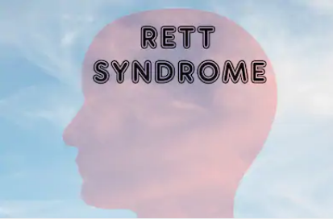

En aquesta pàgina explicaré amb profunditat els diferents graus d'autisme. Per començar posaré una taula amb enllaços a llocs web on
explican cada grau amb millor profunditat.
| Graus | Wikipedia | Pàgina personalitzada |
| Autisme | Link |
Link |
| Sindrome de Rett | Link |
Link |
| Sindrome de Asperger | Link |
Link |
| Trastorn desintegrat infantil o síndrome de Heller | Link |
Link |
| Trastorn generalitzat de el desenvolupament no especificat |
Link |
Link |
El Trastorn de l'espectre autista (TEA) és un trastorn neurobiològic de el desenvolupament que ja es manifesta durant els tres primers
anys de vida i que perdurarà al llarg de tot el cicle vital.
Els símptomes fonamentals de l'autisme són dos:
- Deficiències persistents en la comunicació i en la interacció social.
- Patrons restrictius i repetitius de comportament, interessos o activitats.
La síndrome de Rett és una malaltia congènita amb compromís neurològic que afecta la gran majoria de les vegades a l'sexe femení.
La malaltia no és evident en el moment del naixement, sinó que es manifesta generalment durant el segon any de vida, i en tots els casos
abans dels 4 anys. Afecta aproximadament a 1 nen de cada 10 000. Es pot observar una adquisició del llenguatge i de la coordinació motriu greument tardana,
així com una discapacitat intel·lectual greu. La pèrdua de les capacitats és en general persistent i progressiva.

La síndrome d'Asperger és un trastorn de desenvolupament que s'inclou dins de l'espectre autista i que
afecta la interacció social recíproca, la comunicació verbal i no verbal, una resistència per acceptar el canvi,
inflexibilitat de la pensada així com posseir camps d'interès estrets i absorbents.
Les persones amb aquesta síndrome són, generalment, extremadament bons en les habilitats de memòria
(fets, figures, dates, èpoques, etc.) molts sobresurten en matemàtiques i ciència. Hi ha un rang en la severitat de
símptomes dins de la síndrome, el nen molt lleument afectat resulta sovint no diagnosticat i pot tot just semblar estrany o excèntric.
El trastorn o síndrome desintegrativo de la infància, també conegut com a síndrome d'Heller o psicosi
desintegrativa, és una malaltia rara caracteritzada per una aparició tardana (> 2 anys d'edat) de retards en el
desenvolupament de l'llenguatge, la funció social i les habilitats motrius . Els investigadors no han tingut èxit a
l'trobar una causa per a aquest desordre.
La regressió pot ser molt sobtada, i el nen pot expressar fins i tot la seva preocupació sobre el que està succeint,
per a sorpresa dels pares. Alguns nens descriuen o semblen estar reaccionant davant al·lucinacions, però el símptoma més
obvi és que les habilitats adquirides aparentment es perden

Un trastorn generalitzat del desenvolupament no especificat és un dels quatre trastorns de
l'espectre autista (TEA) i també un dels cinc trastorns classificats com un trastorn generalitzat del desenvolupament (PDD).
Segons el DSM-IV, el PDD-NOS és un diagnòstic que s'utilitza per «deteriorament greu i general en el desenvolupament d'una
interacció social recíproca o habilitats de comunicació verbal i no verbal, o quan hi ha comportaments, interessos i activitats
estereotipades, però no es compleixen criteris per a un PDD específic» o per a diversos altres trastorns.